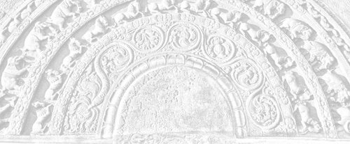

Sermon 1
Namo tassa bhagavato arahato sammāsambuddhassa
Namo tassa bhagavato arahato sammāsambuddhassa
Namo tassa bhagavato arahato sammāsambuddhassaEtaṁ santaṁ, etaṁ paṇītaṁ,
yadidaṁ sabbasaṅkhārasamatho sabbūpadhipaṭinissaggo
taṇhakkhayo virāgo nirodho nibbānaṁ.1“This is peaceful, this is excellent,
namely the stilling of all preparations, the relinquishment of all assets,
the destruction of craving, detachment, cessation, extinction.”
With the permission of the Most Venerable Great Preceptor and the assembly of the venerable meditative monks.
Recently we have had an occasion to listen to a series of sermons on Nibbāna and there have been differences of opinion regarding the interpretation of some deep suttas on Nibbāna in those sermons. And so the venerable Great Preceptor suggested to me that it would be useful to this group if I would give a set of sermons on Nibbāna, touching on those controversial points.
At first, for many reasons, I hesitated to accept this invitation for a serious task, but then, as the venerable Great Preceptor repeatedly encouraged me on this, I gave some thought as to how best I could set about doing it. And it occurred to me that it would be best if I could address these sermons directly to the task before us in this Nissarana Vanaya, and that is meditative attention, rather than dealing with those deep controversial suttas in academic isolation. And that is why I have selected the above quotation as the theme for the entire set of sermons, hoping that it would help create the correct atmosphere of meditative attention.
Etaṁ santaṁ etaṁ paṇītaṁ, yadidaṁ sabbasaṅkhārasamatho sabbūpadhipaṭinissaggo taṇhakkhayo virāgo nirodho nibbānaṁ.
“This is peaceful, this is excellent, namely the stilling of all preparations, the relinquishment of all assets, the destruction of craving, detachment, cessation, extinction”.
This in fact is a meditation subject in itself, a kammaṭṭhāna. This is the reflection on the peace of Nibbāna, upasamānussati. So if we can successfully make use of this as both the heading and the theme of these sermons, we would be in a position to understand those six qualities of the Dhamma. We are told that the Dhamma is svākkhāta, that it is well-proclaimed, sandiṭṭhika, can be seen here and now, akālika, timeless, ehipassika, inviting one to come and see, opanayika, leading one onwards, paccattaṁ veditabbo viññūhi, that it can be understood by the wise each one by himself.2
This set of sermons would have fulfilled its purpose if it drives home the true significance of these six qualities of the Dhamma.
Now at the very outset I would like to say a few things by way of preparing the background and I do hope that this assembly would bear with me for saying certain things that I will be compelled to say in this concern. By way of background something has to be said as to why there are so many complications with regard to the meaning of some of the deep suttas on Nibbāna.
There is a popular belief that the commentaries are finally traceable to a miscellany of the Buddha word scattered here and there, as pakiṇṇakadesanā. But the true state of affairs seems to be rather different. Very often the commentaries are unable to say something conclusive regarding the meaning of deep suttas. So they simply give some possible interpretations and the reader finds himself at a loss to choose the correct one. Sometimes the commentaries go at a tangent and miss the correct interpretation. Why the commentaries are silent on some deep suttas is also a problem to modern day scholars. There are some historical reasons leading to this state of affairs in the commentaries.
In the Āṇisutta of the Nidānavagga in the Saṁyutta Nikāya we find the Buddha making certain prophetic utterances regarding the dangers that will befall the Sāsana in the future. It is said that in times to come, monks will lose interest in those deep suttas which deal with matters transcendental, that they would not listen to those suttas that have to do with the idea of emptiness, suññatā. They would not think it even worthwhile learning or pondering over the meanings of those suttas:
Ye te suttantā tathāgatabhāsitā gambhīrā gambhīratthā lokuttarā suññatappaṭisaṁyuttā, tesu bhaññamānesu na sussūssisanti na sotaṁ odahissanti na aññā cittaṁ upaṭṭhāpessanti na te dhamme uggahetabbaṁ pariyāpuṇitabbaṁ maññissanti.3
There is also another historical reason that can be adduced. An idea got deeply rooted at a certain stage in the Sāsana history that what is contained in the Sutta Piṭaka is simply the conventional teaching and so it came to imply that there is nothing so deep in these suttas. This notion also had its share in the present lack of interest in these suttas. According to Manorathapūraṇī, the Aṅguttara commentary, already at an early stage in the Sāsana history of Sri Lanka, there had been a debate between those who upheld the precept and those who stood for realization.4 And it is said that those who upheld the precept won the day. The final conclusion was that, for the continuity of the Sāsana, precept itself is enough, not so much the realization.
Of course the efforts of the reciter monks of old for the preservation of the precept in the midst of droughts and famines and other calamitous situations are certainly praiseworthy. But the unfortunate thing about it was this: the basket of the Buddha word came to be passed on from hand to hand in the dark, so much so that there was the risk of some valuable things slipping out in the process.
Also there have been certain semantic developments in the commentarial period, and this will be obvious to anyone searching for the genuine Dhamma. It seems that there had been a tendency in the commentarial period to elaborate even on some lucid words in the suttas, simply as a commentarial requirement, and this led to the inclusion of many complicated ideas. By too much overdrawing in the commentaries, the deeper meanings of the Dhamma got obscured. As a matter of fact, the depth of the Dhamma has to be seen through lucidity, just as much as one sees the bottom of a tank only when the water is lucid.
Dve nāma kiṁ?
Nāmañca rūpañca.5“What is the ‘two’?”
“Name and form.”
This is the second out of the ten questions Buddha had put to the Venerable Sāmanera Sopāka who had attained arahantship at the age of seven. It is like asking a child: “Can you count up to ten?” All the ten questions were deep, the tenth being on arahantship. But of course Venerable Sopāka gave the right answer each time. Now it is the second question and its answer that we are concerned with here: nāmañca rūpañca. In fact, this is a basic teaching in insight training.
It is obvious that nāma means ‘name’, and in the suttas also, nāma, when used by itself, means ‘name’. However when we come to the commentaries we find some kind of hesitation to recognize this obvious meaning. Even in the present context, the commentary, Paramatthajotikā, explains the word ‘name’ so as to mean ‘bending’. It says that all immaterial states are called nāma, in the sense that they bend towards their respective objects and also because the mind has the nature of inclination:
Ārammaṇābhimukhaṁ namanato, cittassa ca natihetuto sabbampi arūpaṁ ’nāman’ti vuccati.6
And this is the standard definition of nāma in Abhidhamma compendiums and commentaries. The idea of bending towards an object is brought in to explain the word nāma. It may be that they thought it too simple an interpretation to explain nāma with reference to ‘name’, particularly because it is a term that has to do with deep insight. However as far as the teachings in the suttas are concerned, nāma still has a great depth even when it is understood in the sense of ‘name’.
Nāmaṁ sabbaṁ anvabhavi,
nāmā bhiyyo na vijjati,
nāmassa ekadhammassa,
sabbeva vasamanvagū.7Name has conquered everything,
There is nothing greater than name,
All have gone under the sway
Of this one thing called name.
Also there is another verse of the same type, but unfortunately its original meaning is often ignored by the present day commentators:
Akkheyyasaññino sattā,
akkheyyasmiṁ patiṭṭhitā,
akkheyyaṁ apariññāya,
yogam āyanti maccuno.8Beings are conscious of what can be named,
They are established on the nameable,
By not comprehending the nameable things,
They come under the yoke of death.
All this shows that the word nāma has a deep significance even when it is taken in the sense of ‘name’.
But now let us see whether there is something wrong in rendering nāma by ‘name’ in the case of the term nāma-rūpa. To begin with, let us turn to the definition of nāma-rūpa as given by the Venerable Sāriputta in the Sammādiṭṭhisutta of the Majjhima Nikāya.
Vedanā, saññā, cetanā, phasso, manasikāro – idaṁ vuccatāvuso, nāmaṁ; cattāri ca mahābhūtāni, catunnañca mahābhūtānaṁ upādāyarūpaṁ – idaṁ vuccatāvuso, rūpaṁ. Iti idañca nāmaṁ idañca rūpaṁ – idam vuccatāvuso nāma-rūpaṁ.9
Feeling, perception, intention, contact, attention – this, friend, is called ‘name’. The four great primaries and form dependent on the four great primaries – this, friend, is called ‘form’. So this is ‘name’ and this is ‘form’ – this, friend, is called ‘name-and-form’.
Well, this seems lucid enough as a definition but let us see, whether there is any justification for regarding feeling, perception, intention, contact and attention as ‘name’. Suppose there is a little child, a toddler, who is still unable to speak or understand language. Someone gives him a rubber ball and the child has seen it for the first time. If the child is told that it is a rubber ball, he might not understand it. How does he get to know that object? He smells it, feels it, and tries to eat it, and finally rolls it on the floor. At last he understands that it is a plaything. Now the child has recognised the rubber ball not by the name that the world has given it, but by those factors included under ‘name’ in nāma-rūpa, namely feeling, perception, intention, contact and attention.
This shows that the definition of nāma in nāma-rūpa takes us back to the most fundamental notion of ‘name’, to something like its prototype. The world gives a name to an object for purposes of easy communication. When it gets the sanction of others, it becomes a convention.
While commenting on the verse just quoted, the commentator also brings in a bright idea. As an illustration of the sweeping power of name, he points out that if any tree happens to have no name attached to it by the world, it would at least be known as the ‘nameless tree’.10 Now as for the child, even such a usage is not possible. So it gets to know an object by the aforesaid method. And the factors involved there, are the most elementary constituents of name.
Now it is this elementary name-and-form world that a meditator also has to understand, however much he may be conversant with the conventional world. But if a meditator wants to understand this name-and-form world, he has to come back to the state of a child, at least from one point of view. Of course in this case the equanimity should be accompanied by knowledge and not by ignorance. And that is why a meditator makes use of mindfulness and full awareness, satisampajañña, in his attempt to understand name-and-form.
Even though he is able to recognize objects by their conventional names, for the purpose of comprehending name-and-form, a meditator makes use of those factors that are included under ‘name’: feeling, perception, intention, contact and attention. All these have a specific value to each individual and that is why the Dhamma has to be understood each one by himself – paccattaṁ veditabbo. This Dhamma has to be realized by oneself. One has to understand one’s own world of name-and-form by oneself. No one else can do it for him. Nor can it be defined or denoted by technical terms.
Now it is in this world of name-and-form that suffering is found. According to the Buddha, suffering is not out there in the conventional world of worldly philosophers. It is to be found in this very name-and-form world. So the ultimate aim of a meditator is to cut off the craving in this name-and-form. As it is said: acchecchi taṇhaṁ idha nāmarūpe.11
Now if we are to bring in a simile to clarify this point, the Buddha is called the incomparable surgeon, sallakatto anuttaro.12 Also he is sometimes called taṇhāsallassa hantāraṁ, one who removes the dart of craving.13 So the Buddha is the incomparable surgeon who pulls out the poison-tipped arrow of craving.
We may say therefore that, according to the Dhamma, nāma-rūpa, or name-and-form, is like the wound in which the arrow is embedded. When one is wounded by a poison-tipped arrow, the bandage has to be put, not on the archer or on his bow-string, but on the wound itself. First of all the wound has to be well located and cleaned up. Similarly, the comprehension of name-and-form is the preliminary step in the treatment of the wound caused by the poison-tipped arrow of craving.
And it is for that purpose that a meditator has to pay special attention to those basic components of ‘name’ – feeling, perception, intention, contact and attention – however much he may be proficient in words found in worldly usage. It may even appear as a process of unlearning down to childlike simplicity. But of course, the equanimity implied there, is not based on ignorance but on knowledge.
We find ourselves in a similar situation with regard to the significance of rūpa in nāma-rūpa. Here too we have something deep, but many take nāma-rūpa to mean ‘mind and matter’. Like materialists, they think there is a contrast between mind and matter. But according to the Dhamma there is no such rigid distinction. It is a pair that is interrelated and taken together it forms an important link in the chain of paṭicca samuppāda.
Rūpa exists in relation to ‘name’ and that is to say that form is known with the help of ‘name’. As we saw above, that child got a first-hand knowledge of the rubber ball with the help of contact, feeling, perception, intention and attention. Now in the definition of ‘form’ as cattāri ca mahābhūtāni, catunnañca mahābhūtānaṁ upādāya rūpaṁ the four great primaries are mentioned because they constitute the most primary notion of ‘form’. Just as much as feeling, perception, intention, contact and attention represent the most primary notion of ‘name’, conventionally so called, even so the four great primaries form the basis for the primary notion of ‘form’, as the world understands it.
It is not an easy matter to recognize these primaries. They are evasive like ghosts. But out of their interplay we get the perception of form, rūpasaññā. In fact what is called rūpa in this context is rūpasaññā. It is with reference to the behaviour of the four great elements that the world builds up its concept of form. Its perception, recognition and designation of form is in terms of that behaviour. And that behaviour can be known with the help of those members representing name.
The earth element is recognized through the qualities of hardness and softness, the water element through the qualities of cohesiveness and dissolution, the fire element through hotness and coolness, and the wind element through motion and inflation. In this way one gets acquainted with the nature of the four great primaries. And the perception of form, rūpasaññā, that one has at the back of one’s mind, is the net result of that acquaintance. So this is nāma-rūpa. This is one’s world. The relationship between rūpa and rūpasaññā will be clear from the following verse:
Yattha nāmañca rūpañca,
asesaṁ uparujjhati,
paṭighaṁ rūpasaññā ca,
etthesā chijjate jaṭā.14
This is a verse found in the Jaṭāsutta of the Saṁyutta Nikāya. In that sutta we find a deity putting a riddle before the Buddha for solution:
Anto jaṭā bahi jaṭā,
jaṭāya jaṭitā pajā,
taṁ taṁ Gotama pucchāmi,
ko imaṁ vijaṭaye jaṭaṁ.There is a tangle within, and a tangle without,
The world is entangled with a tangle.
About that, oh Gotama, I ask you,
Who can disentangle this tangle?
The Buddha answers the riddle in three verses, the first of which is fairly well known, because it happens to be the opening verse of the Visuddhimagga:
Sīle patiṭṭhāya naro sapañño,
cittaṁ paññañca bhāvayaṁ,
ātāpī nipako bhikkhu,
so imaṁ vijaṭaye jataṁ.
This means that a wise monk, established in virtue, developing concentration and wisdom, being ardent and prudent, is able to disentangle this tangle. Now this is the second verse:
Yesaṁ rāgo ca doso ca,
avijjā ca virājitā,
khīṇāsavā arahanto,
tesaṁ vijaṭitā jaṭā.In whom lust, hate
And ignorance have faded away,
Those influx-free arahants,
It is in them that the tangle is disentangled.
It is the third verse that is relevant to our topic.
Yattha nāmañca rūpañca,
asesaṁ uparujjhati,
paṭighaṁ rūpasaññā ca,
etthesā chijjate jaṭā.Where name and form
As well as resistance and the perception of form
Are completely cut off,
It is there that the tangle gets snapped.
The reference here is to Nibbāna. It is there that the tangle is disentangled.
The coupling of name-and-form with paṭigha and rūpasaññā in this context, is significant. Here paṭigha does not mean ‘repugnance’, but ‘resistance’. It is the resistance which comes as a reaction to inert matter. For instance, when one knocks against something in passing, one turns back to recognize it. Sense reaction is something like that.
The Buddha has said that the worldling is blind until at least the Dhamma-eye arises in him. So the blind worldling recognizes an object by the very resistance he experiences in knocking against that object.
Paṭigha and rūpasaññā form a pair. Paṭigha is that experience of resistance which comes by the knocking against an object, and rūpasaññā, as perception of form, is the resulting recognition of that object. The perception is in terms of what is hard, soft, hot or cold. Out of such perceptions common to the blind worldlings, arises the conventional reality, the basis of which is the world.
Knowledge and understanding are very often associated with words and concepts, so much so that if one knows the name of a thing, one is supposed to know it. Because of this misconception the world is in a tangle. Names and concepts, particularly the nouns, perpetuate the ignorance in the world. Therefore insight is the only path of release. And that is why a meditator practically comes down to the level of a child in order to understand name and form. He may even have to pretend to be a patient in slowing down his movements for the sake of developing mindfulness and full awareness.
So we see that there is something really deep in nāma-rūpa, even if we render it as ‘name-and-form’. There is an implicit connection with ‘name’ as conventionally so called, but unfortunately this connection is ignored in the commentaries, when they bring in the idea of ‘bending’ to explain the word ‘name’. So we need not hesitate to render nāma-rūpa by ‘name-and-form’. Simple as it may appear, it goes deeper than the worldly concepts of name and form.
Now if we are to summarise all what we have said in this connection, we may say: ‘name’ in ‘name-and-form’ is a formal name. It is an apparent name. ‘Form’ in ‘name-and-form’ is a nominal form. It is a form only in name.
We have to make a similar comment on the meaning of the word Nibbāna. Here too one can see some unusual semantic developments in the commentarial period. It is very common these days to explain the etymology of the word Nibbāna with the help of a phrase like: Vānasaṅkhātāya taṇhāya nikkhantattā.15 And that is to say that Nibbāna is so called because it is an exit from craving which is a form of weaving.
To take the element vāna in the word to mean a form of weaving is as good as taking nāma in nāma-rūpa as some kind of bending. It is said that craving is a kind of weaving in the sense that it connects up one form of existence with another and the prefix ni is said to signify the exit from that weaving.
But nowhere in the suttas do we get this sort of etymology and interpretation. On the other hand it is obvious that the suttas use the word Nibbāna in the sense of ‘extinguishing’ or ‘extinction’. In fact this is the sense that brings out the true essence of the Dhamma.
For instance the Ratanasutta, which is so often chanted as a paritta, says that the arahants go out like a lamp: Nibbanti dhīrā yathāyaṁ padīpo.16 “Those wise ones get extinguished even like this lamp.”
The simile of a lamp getting extinguished is also found in the Dhātuvibhaṅgasutta of the Majjhima Nikāya.17 Sometimes it is the figure of a torch going out: Pajjotass’eva nibbānaṁ, vimokho cetaso ahu, “the mind’s release was like the extinguishing of a torch.”18
The simile of the extinction of a fire is very often brought in as an illustration of Nibbāna and in the Aggivacchagottasutta of the Majjhima Nikāya we find the Buddha presenting it as a sustained simile, giving it a deeper philosophical dimension.19 Now when a fire burns, it does so with the help of firewood. When a fire is burning, if someone were to ask us: “What is burning?” – what shall we say as a reply? Is it the wood that is burning or the fire that is burning? The truth of the matter is that the wood burns because of the fire and the fire burns because of the wood. So it seems we already have here a case of relatedness of this to that, idappaccayatā. This itself shows that there is a very deep significance in the fire simile.
Nibbāna as a term for the ultimate aim of this Dhamma is equally significant because of its allusion to the going out of a fire. In the Asaṅkhatasaṁyutta of the Saṁyutta Nikāya as many as thirty-three terms are listed to denote this ultimate aim.20 But out of all these epithets, Nibbāna became the most widely used, probably because of its significant allusion to the fire. The fire simile holds the answer to many questions relating to the ultimate goal.
The wandering ascetic Vacchagotta, as well as many others, accused the Buddha of teaching a doctrine of annihilation: Sato sattassa ucchedaṁ vināsaṁ vibhavaṁ paññāpeti.21 Their accusation was that the Buddha proclaims the annihilation, destruction and non-existence of a being that is existent. And the Buddha answered them fairly and squarely with the fire simile.
“Now if a fire is burning in front of you dependent on grass and twigs as fuel, you would know that it is burning dependently and not independently, that there is no fire in the abstract. And when the fire goes out, with the exhaustion of that fuel, you would know that it has gone out because the conditions for its existence are no more.”
As a sidelight to the depth of this argument it may be mentioned that the Pāli word upādāna used in such contexts has the sense of both ‘fuel’ as well as ‘grasping’, and in fact, fuel is something that the fire grasps for its burning. Upādānapaccayā bhavo, “dependent on grasping is existence”.22 These are two very important links in the doctrine of dependent arising, paṭicca samuppāda.
The eternalists, overcome by the craving for existence, thought that there is some permanent essence in existence as a reality. But what had the Buddha to say about existence? He said that what is true for the fire is true for existence as well. That is to say that existence is dependent on grasping. So long as there is a grasping, there is an existence. As we saw above, the firewood is called upādāna because it catches fire. The fire catches hold of the wood, and the wood catches hold of the fire. And so we call it firewood. This is a case of a relation of this to that, idappaccayatā. Now it is the same with what is called ‘existence’, which is not an absolute reality.
Even in the Vedic period there was the dilemma between ‘being’ and ‘non-being’. They wondered whether being came out of non-being, or non-being came out of being. Katham asataḥ sat jāyeta, “How could being come out of non-being?”23 In the face of this dilemma regarding the first beginnings, they were sometimes forced to conclude that there was neither non-being nor being at the start, nāsadāsīt no sadāsīt tadānīm.24 Or else in the confusion they would sometimes leave the matter unsolved, saying that perhaps only the creator knew about it.
All this shows what a lot of confusion these two words sat and asat, being and non-being, had created for the philosophers. It was only the Buddha who presented a perfect solution, after a complete reappraisal of the whole problem of existence. He pointed out that existence is a fire kept up by the fuel of grasping, so much so that, when grasping ceases, existence ceases as well.
In fact the fire simile holds the answer to the tetralemma included among the ten unexplained points very often found mentioned in the suttas. It concerns the state of the Tathāgata after death, whether he exists, does not exist, both or neither. The presumption of the questioner is that one or the other of these four must be and could be answered in the affirmative.
The Buddha solves or dissolves this presumptuous tetralemma by bringing in the fire simile. He points out that when a fire goes out with the exhaustion of the fuel, it is absurd to ask in which direction the fire has gone. All that one can say about it, is that the fire has gone out: Nibbuto tveva saṅkhaṁ gacchati, “it comes to be reckoned as ‘gone out’.”25
It is just a reckoning, an idiom, a worldly usage, which is not to be taken too literally. So this illustration through the fire simile drives home to the worldling the absurdity of his presumptuous tetralemma of the Tathāgata.
In the Upasīvasutta of the Pārāyaṇavagga of the Sutta Nipāta we find the lines:
Accī yathā vātavegena khitto,
atthaṁ paleti na upeti saṅkhaṁ,26Like the flame thrown out by the force of the wind
Reaches its end, it cannot be reckoned.
Here the reckoning is to be understood in terms of the four propositions of the tetralemma. Such reckonings are based on a total misconception of the phenomenon of fire.
It seems that the deeper connotations of the word Nibbāna in the context of paṭicca samuppāda were not fully appreciated by the commentators. And that is why they went in search of a new etymology. They were too shy of the implications of the word ‘extinction’. Probably to avoid the charge of nihilism they felt compelled to reinterpret certain key passages on Nibbāna. They conceived Nibbāna as something existing out there in its own right. They would not say where, but sometimes they would even say that it is everywhere. With an undue grammatical emphasis they would say that it is on coming to that Nibbāna that lust and other defilements are abandoned:
Nibbānaṁ āgamma rāgādayo khīṇāti ekameva nibbānaṁ rāgakkhayo dosakkhayo mohakkhayo ti vuccati.27
But what do we find in the joyous utterances of the theras and therīs who had realized Nibbāna? As recorded in such texts as Thera- and Therī-gāthā they would say: Sītibhūto’smi nibbuto, “I am grown cool, extinguished as I am.”28 The words sītibhūta and nibbuta had a cooling effect even to the listener, though later scholars found them inadequate.
Extinction is something that occurs within an individual and it brings with it a unique bliss of appeasement. As the Ratanasutta says: Laddhā mudhā nibbutiṁ bhuñjamānā, “they experience the bliss of appeasement won free of charge.”29 Normally, appeasement is won at a cost, but here we have an appeasement that comes gratis.
From the worldly point of view ‘extinction’ means annihilation. It has connotations of a precipice that is much dreaded. That is why the commentators conceived of it as something out there, on reaching which the defilements are abandoned, nibbānaṁ āgamma rāgādayo khīṇāti. Sometimes they would say that it is on seeing Nibbāna that craving is destroyed.
There seems to be some contradiction in the commentarial definitions of Nibbāna. On the one hand we have the definition of Nibbāna as the exit from craving, which is called a ‘weaving’. And on the other it is said that it is on seeing Nibbāna that craving is destroyed. To project Nibbāna into a distance and to hope that craving will be destroyed only on seeing it, is something like trying to build a staircase to a palace one cannot yet see. In fact this is a simile which the Buddha had used in his criticism of the Brahmin’s point of view.30
In the Dhammacakkappavattanasutta we have a very clear statement of the third noble truth. Having first said that the second noble truth is craving, the Buddha goes on to define the third noble truth in these words: Tassāyeva taṇhāya asesavirāganirodho cāgo paṭinissaggo mutti anālayo.31
This is to say that the third noble truth is the complete fading away, cessation, giving up, relinquishment of that very craving. That it is the release from and non-attachment to that very craving. In other words it is the destruction of this very mass of suffering which is just before us.
In the suttas the term taṇhakkhayo, the destruction of craving, is very often used as a term for Nibbāna.32 But the commentator says that destruction alone is not Nibbāna: Khayamattaṁ na nibbānaṁ.33 But the destruction of craving itself is called the highest bliss in the following verse of the Udāna:
Yañca kāmasukhaṁ loke,
yaṁ c’idaṁ diviyaṁ sukhaṁ,
taṇhakkhaya sukhass’ete,
kalaṁ n’agghanti soḷasiṁ.34Whatever bliss from sense-desires there is in the world,
Whatever divine bliss there is,
All these are not worth one-sixteenth
Of the bliss of the destruction of craving.
Many of the verses found in the Udāna are extremely deep and this is understandable, since udāna means a ‘joyous utterance’. Generally a joyous utterance comes from the very depths of one’s heart, like a sigh of relief. As a matter of fact one often finds that the concluding verse goes far deeper in its implications than the narrative concerned. For instance, in the Udapānasutta, we get the following joyous utterance, coming from the Buddha himself:
Kiṁ kayirā udapānena,
āpā ce sabbadā siyuṁ,
taṇhāya mūlato chetvā,
kissa pariyesanaṁ care.35What is the use of a well,
If water is there all the time,
Having cut craving at the root,
In search of what should one wander?
This shows that the destruction of craving is not a mere destruction.
Craving is a form of thirst and that is why Nibbāna is sometimes called pipāsavinayo, the dispelling of the thirst.36 To think that the destruction of craving is not sufficient is like trying to give water to one who has already quenched his thirst. But the destruction of craving has been called the highest bliss. One who has quenched his thirst for good, is aware of that blissful experience. When he sees the world running here and there in search of water, he looks within and sees the well-spring of his bliss.
However to most of our scholars the term taṇhakkhaya appeared totally negative and that is why they hesitated to recognize its value. In such conventional usages as Nibbānaṁ āgamma they found a grammatical excuse to separate that term from Nibbāna.
According to the Buddha the cessation of existence is Nibbāna and that means Nibbāna is the realization of the cessation of existence. Existence is said to be an eleven-fold fire. So the entire existence is a raging fire. Lust, hate, delusion – all these are fires. Therefore Nibbāna may be best rendered by the word ‘extinction’. When once the fires are extinguished, what more is needed?
But unfortunately Venerable Buddhaghosa was not prepared to appreciate this point of view. In his Visuddhimagga as well as in the commentaries Sāratthappakāsinī and Sammohavinodanī, he gives a long discussion on Nibbāna in the form of an argument with an imaginary heretic.37 Some of his arguments are not in keeping with either the letter or the spirit of the Dhamma.
First of all he gets the heretic to put forward the idea that the destruction of lust, hate and delusion is Nibbāna. Actually the heretic is simply quoting the Buddha word, for in the Nibbānasutta of the Asaṅkhatasaṁyutta the destruction of lust, hate and delusion is called Nibbāna: Rāgakkhayo, dosakkhayo, mohakkhayo – idaṁ vuccati nibbānaṁ.38
The words rāgakkhaya, dosakkhaya and mohakkhaya together form a synonym of Nibbāna, but the commentator interprets it as three synonyms. Then he argues out with the imaginary heretic that if Nibbāna is the extinguishing of lust it is something common even to the animals, for they also extinguish their fires of lust through enjoyment of the corresponding objects of sense.39 This argument ignores the deeper sense of the word extinction, as it is found in the Dhamma.
In the Māgaṇḍiyasutta of the Majjhima Nikāya the Buddha gives the simile of a man with a skin disease sitting beside a pit of hot embers to explain the position of lustful beings in the world.40 That man is simply trying to assuage his pains by the heat of the fire. It is an attempt to warm up, not to cool down. Similarly what the lustful beings in the world are doing in the face of the fires of lust is a warming up. It can in no way be compared to the extinction and the cooling down of the arahants.
As the phrase nibbutiṁ bhuñjamānā implies, that extinction is a blissful experience for the arahants. It leaves a permanent effect on the arahant, so much so that upon reflection he sees that his influxes are extinct, just as a man with his hands and feet cut off, knows upon reflection that his limbs are gone.41 It seems that the deeper implications of the word Nibbāna have been obscured by a set of arguments which are rather misleading.
In fact I came forward to give these sermons for three reasons: Firstly because the venerable Great Preceptor invited me to do so. Secondly in the hope that it will be of some benefit to my co-dwellers in the Dhamma. And thirdly because I myself felt rather concerned about the inadequacy of the existing interpretations.
What we have said so far is just about the word Nibbāna as such. Quite a number of suttas on Nibbāna will be taken up for discussion. This is just a preamble to show that the word Nibbāna in the sense of ‘extinction’ has a deeper dimension, which has some relevance to the law of dependent arising, paṭicca samuppāda.
By bringing in an etymology based on the element vāna, much of the original significance of the word Nibbāna came to be undermined. On quite a number of occasions the Buddha has declared that the cessation of suffering is Nibbāna, or else that the destruction of craving is Nibbāna. Terms like dukkhanirodho and taṇhakkhayo have been used as synonyms. If they are synonyms, there is no need to make any discrimination with regard to some of them, by insisting on a periphrastic usage like āgamma.
Yet another important aspect of the problem is the relation of Nibbāna to the holy life or brahmacariya. It is said that when the holy life is lived out to the full, it culminates in Nibbāna.
In the Rādhasaṁyutta of the Saṁyutta Nikāya we find the Venerable Rādha putting a series of questions to the Buddha to get an explanation. First of all he asks:
Sammādassanaṁ pana, bhante, kimatthiyaṁ?42
For what purpose is right vision?
And the Buddha gives the answer:
Sammādassanaṁ kho, Rādha, nibbidatthaṁ,
Rādha, right vision is for purposes of disgust or dejection.
And that is to say, disgust for saṁsāra.
The next question is: for what purpose is disgust? And the Buddha answers: disgust is for dispassion. What is the purpose of dispassion? The purpose of dispassion is release. What is the purpose of release? The purpose of release is Nibbāna. Last of all Venerable Rādha puts the question:
Nibbānaṁ pana, bhante, kimatthiyaṁ? “For what purpose is Nibbāna?” And the Buddha gives this answer:
Accasarā, Rādha, pañhaṁ, nāsakkhi pañhassa pariyantaṁ gahetuṁ. Nibbānogadhañhi, Rādha, brahmacariyaṁ vussati, nibbānaparāyanaṁ nibbānapariyosānaṁ.
Rādha, you have gone beyond the scope of your questions, you are unable to grasp the limit of your questions. For, Rādha, the holy life is merged in Nibbāna, its consummation is Nibbāna, its culmination is Nibbāna.
This shows that the holy life gets merged in Nibbāna, just as rivers get merged in the sea. In other words, where the holy life is lived out to the full, Nibbāna is right there. That is why Venerable Nanda, who earnestly took up the holy life encouraged by the Buddha’s promise of heavenly nymphs, attained arahanthood almost in spite of himself. At last he approached the Buddha and begged to relieve him of the onus of his promise. This shows that when one completes the training in the Holy Life, one is already in Nibbāna. Only when the training is incomplete, can one go to heaven.
Here, then, is a result which comes of its own accord. So there is no justification for a periphrastic usage like, ‘on reaching Nibbāna’. No glimpse of a distant object is necessary. At whatever moment the Noble Eightfold Path is perfected, one attains Nibbāna then and there. Now, in the case of an examination, after answering the question paper, one has to wait for the results – to get a pass.
Here it is different. As soon as you have answered the paper correctly, you have passed im-mediately and the certificate is already there. This is the significance of the term aññā used in such contexts. Aññā stands for full certitude of the experience of Nibbāna.
The experience of the fruit of arahantship gives him the final certificate of his attainment, aññāphalo.43 That is why Nibbāna is called something to be realized. One gets the certitude that birth is extinct and that the holy life is lived out to the full, khīṇā jāti, vusitaṁ brahmacariyaṁ.44
Of course there are some who still go on asking: what is the purpose of Nibbāna? And it is to answer this type of question that many scholars go on hair splitting. Normally in the world, whatever one does has some purpose or other. All occupations, all trades and businesses, are for gain and profit. Thieves and burglars also have some purpose in mind. But what is the purpose of trying to attain Nibbāna? What is the purpose of Nibbāna? Why should one attain Nibbāna?
It is to give an answer to this question that scholars brought in such phrases as Nibbānaṁ pana āgamma, ‘on reaching Nibbāna’. They would say that ‘on reaching Nibbāna’, craving would be destroyed. On closer analysis it would appear that there is some fallacy in this question. For if there is any aim or purpose in attaining Nibbāna, Nibbāna would not be the ultimate aim. In other words, if Nibbāna is the ultimate aim, there should be no aim in attaining Nibbāna. Though it may well sound a tautology, one has to say that Nibbāna is the ultimate aim for the simple reason that there is no aim beyond it.
However, this might need more explanation. Now as far as craving is concerned, it has the nature of projection or inclination. It is something bent forward, with a forward view, and that is why it is called bhavanetti, the leader in becoming.45 It leads one on and on in existence, like the carrot before the donkey. So that is why all objects presented by craving have some object or purpose as a projection. Craving is an inclination.
But what is the position if one makes the destruction of craving itself one’s object? Now craving because of its inclining nature is always bent forward, so much so that we get an infinite progression. This is for that, and that is for the other. As the phrase taṇhā ponobhavikā implies, craving brings up existence again and again.46
But this is not the case when one makes the destruction of craving one’s aim. When that aim is attained, there is nothing more to be done. So this brings us to the conclusion that the term taṇhakkhayo, destruction of craving, is a full-fledged synonym of Nibbāna.
Well, this much is enough for today. Time permitting and life permitting, I hope to continue with these sermons. I suppose the most Venerable Great Preceptor made this invitation with the idea of seeing one of his children at play. For good or for bad, I have taken up the invitation. Let the future of the Sāsana be the final judge of its merits.